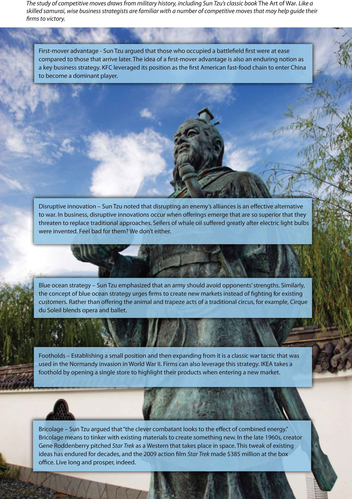
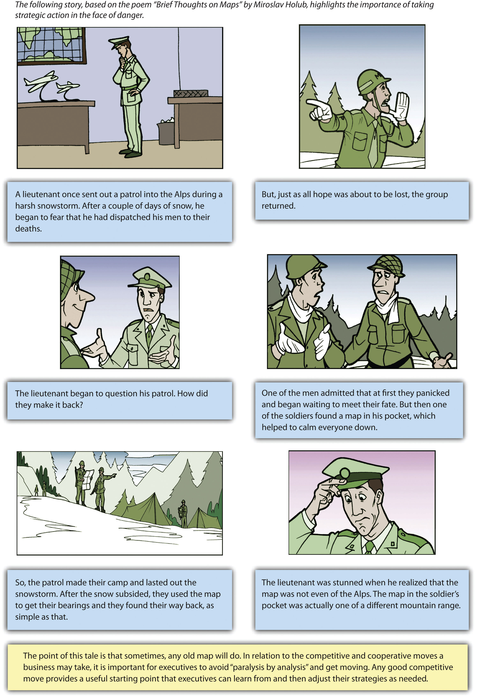

After reading this chapter, you should be able to understand and articulate answers to the following questions:
On June 7, 2011, pharmaceutical giant Merck & Company Inc. announced the formation of a strategic alliance with Roche Holding AG, a smaller pharmaceutical firm that is known for excellence in medical testing. The firms planned to work together to create tests that could identify cancer patients who might benefit from cancer drugs that Merck had under development.Stynes, T. 2011, June 7. Merck, Roche focus on tests for cancer treatments. Wall Street Journal. Retrieved from online.wsj.com/article/SB100014240527023044323045 76371491785709756.html?mod=googlenews_wsj
This was the second alliance formed between the companies in less than a month. On May 16, 2011, the US Food and Drug Administration approved a drug called Victrelis that Merck had developed to treat hepatitis C. Merck and Roche agreed to promote Victrelis together. This surprised industry experts because Merck and Roche had offered competing treatments for hepatitis C in the past. The Merck/Roche alliance was expected to help Victrelis compete for market share with a new treatment called Incivek that was developed by a team of two other pharmaceutical firms: Vertex and Johnson & Johnson.
Experts predicted that Victrelis’s wholesale price of $1,100 for a week’s supply could create $1 billion of annual revenue. This could be an important financial boost to Merck, although the company was already enormous. Merck’s total of $46 billion in sales in 2010 included approximately $5.0 billion in revenues from asthma treatment Singulair, $3.3 billion for two closely related diabetes drugs, $2.1 billion for two closely related blood pressure drugs, and $1.1 billion for an HIV/AIDS treatment.
Despite these impressive numbers, concerns about Merck had reduced the price of the firm’s stock from nearly $60 per share at the start of 2008 to about $36 per share by June 2011. A big challenge for Merck is that once the patent on a drug expires, its profits related to that drug plummet because generic drugmakers can start selling the drug. The patent on Singulair is set to expire in the summer of 2012, for example, and a sharp decline in the massive revenues that Singulair brings into Merck seemed inevitable.Statistics drawn from Standard & Poor’s stock report on Merck.
A major step in the growth of Merck was the 2009 acquisition of drugmaker Schering-Plough. By 2011, Merck ranked fifty-third on the Fortune 500 list of America’s largest companies. Rivals Pfizer (thirty-first) and Johnson & Johnson (fortieth) still remained much bigger than Merck, however. Important questions also loomed large. Would the competitive and cooperative moves made by Merck’s executives keep the firm healthy? Or would expiring patents, fearsome rivals, and other challenges undermine Merck’s vitality?
Friedrich Jacob Merck had no idea that he was setting the stage for such immense stakes when he took the first steps toward the creation of Merck. He purchased a humble pharmacy in Darmstadt, Germany, in 1688. In 1827, the venture moved into the creation of drugs when Heinrich Emanuel Merck, a descendant of Friedrich, created a factory in Darmstadt in 1827. The modern version of Merck was incorporated in 1891. More than three hundred years after its beginnings, Merck now has approximately ninety-four thousand employees.
Merck’s origins can be traced back more than three centuries to Friedrich Jacob Merck’s purchase of this pharmacy in 1688.
Image courtesy of Wikimedia, http://upload.wikimedia.org/wikipedia/commons/e/eb/ENGEL_APHOTHEKE.png.
For executives leading firms such as Merck, selecting a generic strategy is a key aspect of business-level strategy, but other choices are very important too. In their ongoing battle to make their firms more successful, executives must make decisions about what competitive moves to make, how to respond to rivals’ competitive moves, and what cooperative moves to make. This chapter discusses some of the more powerful and interesting options. As our opening vignette on Merck illustrates, often another company, such as Roche, will be a potential ally in some instances and a potential rival in others.
Figure 6.1 Making Competitive Moves
Image courtesy of 663highland, http://en.wikipedia.org/wiki/File:Enchoen27n3200.jpg
A famous cliché contends that “the early bird gets the worm.” Applied to the business world, the cliché suggests that certain benefits are available to a first moverAn initial entrant into a market. into a market that will not be available to later entrants (Figure 6.1 "Making Competitive Moves"). A first-mover advantageWhen the initial move into a market allows a firm to establish a dominant position that other firms struggle to overcome. exists when making the initial move into a market allows a firm to establish a dominant position that other firms struggle to overcome (Figure 6.2 "First Mover Advantage"). For example, Apple’s creation of a user-friendly, small computer in the early 1980s helped fuel a reputation for creativity and innovation that persists today. Kentucky Fried Chicken (KFC) was able to develop a strong bond with Chinese officials by being the first Western restaurant chain to enter China. Today, KFC is the leading Western fast-food chain in this rapidly growing market. Genentech’s early development of biotechnology allowed it to overcome many of the pharmaceutical industry’s traditional entry barriers (such as financial capital and distribution networks) and become a profitable firm. Decisions to be first movers helped all three firms to be successful in their respective industries.This section draws from Ketchen, D. J., Snow, C., & Street, V. 2004. Improving firm performance by matching strategic decision making processes to competitive dynamics. Academy of Management Executive, 19(4), 29–43.
On the other hand, a first mover cannot be sure that customers will embrace its offering, making a first move inherently risky. Apple’s attempt to pioneer the personal digital assistant market, through its Newton, was a financial disaster. The first mover also bears the costs of developing the product and educating customers. Others may learn from the first mover’s successes and failures, allowing them to cheaply copy or improve the product. In creating the Palm Pilot, for example, 3Com was able to build on Apple’s earlier mistakes. Matsushita often refines consumer electronic products, such as compact disc players and projection televisions, after Sony or another first mover establishes demand. In many industries, knowledge diffusion and public-information requirements make such imitation increasingly easy.
One caution is that first movers must be willing to commit sufficient resources to follow through on their pioneering efforts. RCA and Westinghouse were the first firms to develop active-matrix LCD display technology, but their executives did not provide the resources needed to sustain the products spawned by this technology. Today, these firms are not even players in this important business segment that supplies screens for notebook computers, camcorders, medical instruments, and many other products.
To date, the evidence is mixed regarding whether being a first mover leads to success. One research study of 1,226 businesses over a fifty-five-year period found that first movers typically enjoy an advantage over rivals for about a decade, but other studies have suggested that first moving offers little or no advantages.
Perhaps the best question that executives can ask themselves when deciding whether to be a first mover is, how likely is this move to provide my firm with a sustainable competitive advantage? First moves that build on strategic resources such as patented technology are difficult for rivals to imitate and thus are likely to succeed. For example, Pfizer enjoyed a monopoly in the erectile dysfunction market for five years with its patented drug Viagra before two rival products (Cialis and Levitra) were developed by other pharmaceutical firms. Despite facing stiff competition, Viagra continues to raise about $1.9 billion in sales for Pfizer annually.Figures from Standard & Poor’s stock report on Pfizer.
In contrast, E-Trade Group’s creation in 2003 of the portable mortgage seemed doomed to fail because it did not leverage strategic resources. This innovation allowed customers to keep an existing mortgage when they move to a new home. Bigger banks could easily copy the portable mortgage if it gained customer acceptance, undermining E-Trade’s ability to profit from its first move.
Some firms have the opportunity to shake up their industry by introducing a disruptive innovationAn improvement that conflicts with, and threatens to replace, traditional approaches to competing within an industry.—an innovation that conflicts with, and threatens to replace, traditional approaches to competing within an industry (Figure 6.3 "Shaking the Market with Disruptive Innovations"). The iPad has proved to be a disruptive innovation since its introduction by Apple in 2010. Many individuals quickly abandoned clunky laptop computers in favor of the sleek tablet format offered by the iPad. And as a first mover, Apple was able to claim a large share of the market.
The iPad story is unusual, however. Most disruptive innovations are not overnight sensations. Typically, a small group of customers embrace a disruptive innovation as early adopters and then a critical mass of customers builds over time. An example is digital cameras. Few photographers embraced digital cameras initially because they took pictures slowly and offered poor picture quality relative to traditional film cameras. As digital cameras have improved, however, they have gradually won over almost everyone that takes pictures. Executives who are deciding whether to pursue a disruptive innovation must first make sure that their firm can sustain itself during an initial period of slow growth.
In warfare, many armies establish small positions in geographic territories that they have not occupied previously. These footholds provide value in at least two ways (Figure 6.4 "Footholds"). First, owning a foothold can dissuade other armies from attacking in the region. Second, owning a foothold gives an army a quick strike capability in a territory if the army needs to expand its reach.
Similarly, some organizations find it valuable to establish footholds in certain markets. Within the context of business, a footholdA small position that a firm intentionally establishes within a market in which it does not yet compete. is a small position that a firm intentionally establishes within a market in which it does not yet compete.Upson, J., Ketchen, D. J., Connelly, B., & Ranft, A. Forthcoming. Competitor analysis and foothold moves. Academy of Management Journal. Swedish furniture seller IKEA is a firm that relies on footholds. When IKEA enters a new country, it opens just one store. This store is then used as a showcase to establish IKEA’s brand. Once IKEA gains brand recognition in a country, more stores are established.Hambrick, D. C., & Fredrickson, J. W. 2005. Are you sure you have a strategy? Academy of Management Executive, 19, 51–62.
Pharmaceutical giants such as Merck often obtain footholds in emerging areas of medicine. In December 2010, for example, Merck purchased SmartCells Inc., a company that was developing a possible new treatment for diabetes. In May 2011, Merck acquired an equity stake in BeiGene Ltd., a Chinese firm that was developing novel cancer treatments and detection methods. Competitive moves such as these offer Merck relatively low-cost platforms from which it can expand if clinical studies reveal that the treatments are effective.
It is best to win without fighting.
Sun-Tzu, The Art of War
A blue ocean strategyCreating a new, untapped market rather than competing with rivals in an existing market. involves creating a new, untapped market rather than competing with rivals in an existing market.Kim, W. C., & Mauborgne, R. 2004, October. Blue ocean strategy. Harvard Business Review, 76–85. This strategy follows the approach recommended by the ancient master of strategy Sun-Tzu in the quote above. Instead of trying to outmaneuver its competition, a firm using a blue ocean strategy tries to make the competition irrelevant (Figure 6.5 "Blue Ocean Strategy"). Baseball legend Wee Willie Keeler offered a similar idea when asked how to become a better hitter: “Hit ’em where they ain’t.” In other words, hit the baseball where there are no fielders rather than trying to overwhelm the fielders with a ball hit directly at them.
Nintendo openly acknowledges following a blue ocean strategy in its efforts to invent new markets. In 2006, Perrin Kaplan, Nintendo’s vice president of marketing and corporate affairs for Nintendo of America noted in an interview, “We’re making games that are expanding our base of consumers in Japan and America. Yes, those who’ve always played games are still playing, but we’ve got people who’ve never played to start loving it with titles like Nintendogs, Animal Crossing and Brain Games. These games are blue ocean in action.”Rosmarin, R. 2006, February 7. Nintendo’s new look. Forbes.com. Retrieved from http://www.forbes.com/2006/02/07/xbox-ps3-revolution-cx_rr_0207nintendo.html Other examples of companies creating new markets include FedEx’s invention of the fast-shipping business and eBay’s invention of online auctions.
BricolageUsing whatever materials and resources happen to be available as the inputs into a creative process. is a concept that is borrowed from the arts and that, like blue ocean strategy, stresses moves that create new markets. Bricolage means using whatever materials and resources happen to be available as the inputs into a creative process. A good example is offered by one of the greatest inventions in the history of civilization: the printing press. As noted in the Wall Street Journal, “The printing press is a classic combinatorial innovation. Each of its key elements—the movable type, the ink, the paper and the press itself—had been developed separately well before Johannes Gutenberg printed his first Bible in the 15th century. Movable type, for instance, had been independently conceived by a Chinese blacksmith named Pi Sheng four centuries earlier. The press itself was adapted from a screw press that was being used in Germany for the mass production of wine.”Johnson, S. The genius of the tinkerer. Wall Street Journal. Retrieved from http://online.wsj.com/article/SB10001424052748703989304575503730101860838.html Gutenberg took materials that others had created and used them in a unique and productive way.
Actor Johnny Depp uses bricolage when creating a character. Captain Jack Sparrow, for example, combines aspects of Rolling Stones guitarist Keith Richards and cartoon skunk Pepé Le Pew.
Reproduced with permission from [citation redacted per publisher request].
Executives apply the concept of bricolage when they combine ideas from existing businesses to create a new business. Think miniature golf is boring? Not when you play at one of Monster Mini Golf’s more than twenty-five locations. This company couples a miniature golf course with the thrills of a haunted house. In April 2011, Monster Mini Golf announced plans to partner with the rock band KISS to create a “custom-designed, frightfully fun course [that] will feature animated KISS and monster props lurking in all 18 fairways” in Las Vegas.KISS Mini Golf to rock Las Vegas this fall [Press release]. 2011, April 28. Monster Mini Golf website. Retrieved from http://www.monsterminigolf.com/mmgkiss.html
Braveheart meets heavy metal when TURISAS takes the stage.
Image courtesy of Cecil, http://en.wikipedia.org/wiki/File:Turisas_-_Jalometalli_2008_-_02.JPG.
Many an expectant mother has lamented the unflattering nature of maternity clothes and the boring stores that sell them. Coming to the rescue is Belly Couture, a boutique in Lubbock, Texas, that combines stylish fashion and maternity clothes. The store’s clever slogan—“Motherhood is haute”—reflects the unique niche it fills through bricolage. A wilder example is TURISAS, a Finnish rock band that has created a niche for itself by combining heavy metal music with the imagery and costumes of Vikings. The band’s website describes their effort at bricolage as “inspirational cinematic battle metal brilliance.”http://www.turisas.com/site/biography/ No one ever claimed that rock musicians are humble.
Love and Other Drugs
Competitive moves are chosen within executive suites, but they are implemented by frontline employees. Organizational success thus depends just as much on workers such as salespeople excelling in their roles as it does on executives’ ability to master strategy. A good illustration is provided in the 2010 film Love and Other Drugs, which was based on the nonfiction book Hard Sell: The Evolution of a Viagra Salesman.
As a new sales representative for drug giant Pfizer, Jamie Randall believed that the best way to increase sales of Pfizer’s antidepressant Zoloft in his territory was to convince highly respected physician Dr. Knight to prescribe Zoloft rather than the good doctor’s existing preference, Ely Lilly’s drug Prozac. Once Dr. Knight began prescribing Zoloft, thought Randall, many other physicians in the area would follow suit.
This straightforward plan proved more difficult to execute than Randall suspected. Sales reps from Ely Lilly and other pharmaceutical firms aggressively pushed their firm’s products, such as by providing all-expenses-paid trips to Hawaii for nurses in Dr. Knight’s office. Prozac salesman Trey Hannigan went so far as to beat up Randall after finding out that Randall had stolen and destroyed Prozac samples. While assault is an extreme measure to defend a sales territory, the actions of Hannigan and the other salespeople depicted in Love and Other Drugs reflect the challenges that frontline employees face when implementing executives’ strategic decisions about competitive moves.
Image courtesy of Marco, http://www.flickr.com/photos/zi1217/5528068221.
In addition to choosing what moves their firm will make, executives also have to decide whether to respond to moves made by rivals (Figure 6.6 "Responding to Rivals’ Moves"). Figuring out how to react, if at all, to a competitor’s move ranks among the most challenging decisions that executives must make. Research indicates that three factors determine the likelihood that a firm will respond to a competitive move: awareness, motivation, and capability. These three factors together determine the level of competition tension that exists between rivals (Figure 6.7 "Competitive Tension: The A-M-C Framework").
An analysis of the “razor wars” illustrates the roles that these factors play.Portions of this section are adapted from Ketchen, D. J., Snow, C., & Street, V. 2004. Improving firm performance by matching strategic decision making processes to competitive dynamics. Academy of Management Executive, 19(4) 29-43. Ibid. Consider Schick’s attempt to grow in the razor-system market with its introduction of the Quattro. This move was widely publicized and supported by a $120 million advertising budget. Therefore, its main competitor, Gillette, was well aware of the move. Gillette’s motivation to respond was also high. Shaving products are a vital market for Gillette, and Schick has become an increasingly formidable competitor since its acquisition by Energizer. Finally, Gillette was very capable of responding, given its vast resources and its dominant role in the industry. Because all three factors were high, a strong response was likely. Indeed, Gillette made a preemptive strike with the introduction of the Sensor 3 and Venus Devine a month before the Schick Quattro’s projected introduction.
Although examining a firm’s awareness, motivation, and capability is important, the results of a series of moves and countermoves are often difficult to predict and miscalculations can be costly. The poor response by Kmart and other retailers to Walmart’s growth in the late 1970s illustrates this point. In discussing Kmart’s parent corporation (Kresge), a stock analyst at that time wrote, “While we don’t expect Kresge to stage any massive invasion of Walmart’s existing territory, Kresge could logically act to contain Walmart’s geographical expansion.…Assuming some containment policy on Kresge’s part, Walmart could run into serious problems in the next few years.” Kmart executives also received but ignored early internal warnings about Walmart. A former member of Kmart’s board of directors lamented, “I tried to advise the company’s management of just what a serious threat I thought [Sam Walton, founder of Walmart] was. But it wasn’t until fairly recently that they took him seriously.” While the threat of Walmart growth was apparent to some observers, Kmart executives failed to respond. Competition with Walmart later drove Kmart into bankruptcy.
Executives in many markets must cope with a rapid-fire barrage of attacks from rivals, such as head-to-head advertising campaigns, price cuts, and attempts to grab key customers. If a firm is going to respond to a competitor’s move, doing so quickly is important. If there is a long delay between an attack and a response, this generally provides the attacker with an edge. For example, PepsiCo made the mistake of waiting fifteen months to copy Coca-Cola’s May 2002 introduction of Vanilla Coke. In the interim, Vanilla Coke carved out a significant market niche; 29 percent of US households had purchased the beverage by August 2003, and 90 million cases had been sold.
In contrast, fast responses tend to prevent such an edge. Pepsi’s spring 2004 announcement of a midcalorie cola introduction was quickly followed by a similar announcement by Coke, signaling that Coke would not allow this niche to be dominated by its longtime rival. Thus, as former General Electric CEO Jack Welch noted in his autobiography, success in most competitive rivalries “is less a function of grandiose predictions than it is a result of being able to respond rapidly to real changes as they occur. That’s why strategy has to be dynamic and anticipatory.”
Multipoint competition adds complexity to decisions about whether to respond to a rival’s moves. With multipoint competitionA situation in which a firm faces the same rival in more than one market., a firm faces the same rival in more than one market. Cigarette makers R. J. Reynolds (RJR) and Philip Morris, for example, square off not only in the United States but also in many countries around the world. When a firm has one or more multipoint competitors, executives must realize that a competitive move in a market can have effects not only within that market but also within others. In the early 1990s, RJR started using lower-priced cigarette brands in the United States to gain customers. Philip Morris responded in two ways. The first response was cutting prices in the United States to protect its market share. This started a price war that ultimately hurt both companies. Second, Philip Morris started building market share in Eastern Europe where RJR had been establishing a strong position. This combination of moves forced RJR to protect its market share in the United States and neglect Eastern Europe.
If rivals are able to establish mutual forbearance, then multipoint competition can help them be successful. Mutual forbearanceA situation in which rivals do not act aggressively because each recognizes that the other can retaliate in multiple markets. occurs when rivals do not act aggressively because each recognizes that the other can retaliate in multiple markets. In the late 1990s, Southwest Airlines and United Airlines competed in some but not all markets. United announced plans to form a new division that would move into some of Southwest’s other routes. Southwest CEO Herb Kelleher publicly threatened to retaliate in several shared markets. United then backed down, and Southwest had no reason to attack. The result was better performance for both firms. Similarly, in hindsight, both RJR and Philip Morris probably would have been more profitable had RJR not tried to steal market share in the first place. Thus recognizing and acting on potential forbearance can lead to better performance through firms not competing away their profits, while failure to do so can be costly.
When a rival introduces a disruptive innovation that conflicts with the industry’s current competitive practices, such as the emergence of online stock trading in the late 1990s, executives choose from among three main responses. First, executives may believe that the innovation will not replace established offerings entirely and thus may choose to focus on their traditional modes of business while ignoring the disruption. For example, many traditional bookstores such as Barnes & Noble did not consider book sales on Amazon to be a competitive threat until Amazon began to take market share from them. Second, a firm can counter the challenge by attacking along a different dimension. For example, Apple responded to the direct sales of cheap computers by Dell and Gateway by adding power and versatility to its products. The third possible response is to simply match the competitor’s move. Merrill Lynch, for example, confronted online trading by forming its own Internet-based unit. Here the firm risks cannibalizing its traditional business, but executives may find that their response attracts an entirely new segment of customers.
A firm’s success can be undermined when a competitor tries to lure away its customers by charging lower prices for its goods or services. Such a scenario is especially scary if the quality of the competitor’s offerings is reasonably comparable to the firm’s. One possible response would be for the firm to lower its prices to prevent customers from abandoning it. This can be effective in the short term, but it creates a long-term problem. Specifically, the firm will have trouble increasing its prices back to their original level in the future because charging lower prices for a time will devalue the firm’s brand and make customers question why they should accept price increases.
The creation of a fighting brand is a move that can prevent this problem. A fighting brandA lower-end brand that a firm introduces to try protect the firm’s market share without damaging the firm’s existing brands. is a lower-end brand that a firm introduces to try to protect the firm’s market share without damaging the firm’s existing brands. In the late 1980s, General Motors (GM) was troubled by the extent to which the sales of small, inexpensive Japanese cars were growing in the United States. GM wanted to recapture lost sales, but it did not want to harm its existing brands, such as Chevrolet, Buick, and Cadillac, by putting their names on low-end cars. GM’s solution was to sell small, inexpensive cars under a new brand: Geo.
Interestingly, several of Geo’s models were produced in joint ventures between GM and the same Japanese automakers that the Geo brand was created to fight. A sedan called the Prizm was built side by side with the Toyota Corolla by the New United Motor Manufacturing Incorporated (NUMMI), a factory co-owned by GM and Toyota. The two cars were virtually identical except for minor cosmetic differences. A smaller car (the Metro) and a compact sport utility vehicle (the Tracker) were produced by a joint venture between GM and Suzuki. By 1998, the US car market revolved around higher-quality vehicles, and the low-end Geo brand was discontinued.
The Geo brand was known for its low price and good gas mileage, not for its styling.
Image courtesy of Bull-Doser, http://upload.wikimedia.org/wikipedia/commons/6/6a/Geo_Metro_Convertible.JPG.
Some fighting brands are rather short lived. Merck’s failed attempt to protect market share in Germany by creating a fighting brand is an example. Zocor, a treatment for high cholesterol, was set to lose its German patent in 2003. Merck tried to keep its high profit margin for Zocor intact until the patent expired as well as preparing for the inevitable competition with generic drugmakers by creating a lower-priced brand, Zocor MSD. Once the patent expired, however, the new brand was not priced low enough to keep customers from switching to generics. Merck soon abandoned the Zocor MSD brand.Ritson, M. 2009, October. Should you launch a fighter brand? Harvard Business Review, 65–81.
Two major airlines experienced similar futility. In response to the growing success of discount airlines such as Southwest, AirTran, Jet Blue, and Frontier, both United Airlines and Delta Airlines created fighting brands. United launched Ted in 2004 and discontinued it in 2009. Delta’s Song had an even shorter existence. It was started in 2003 and was ended in 2006. Southwest’s acquisition of AirTran in 2011 created a large airline that may make United and Delta lament that they were not able to make their own discount brands successful.
Despite these missteps, the use of fighting brands is a time-tested competitive move. For example, very successful fighting brands were launched forty years apart by Anheuser-Busch and Intel. After Anheuser-Busch increased the prices charged by its existing brands in the mid-1950s (Budweiser and Michelob), smaller brewers started gaining market share. In response, Anheuser-Busch created a lower-priced brand: Busch. The new brand won back the market share that had been lost and remains an important part of Anheuser-Busch’s brand portfolio today. In the late 1990s, silicon chipmaker Advanced Micro Devices started undercutting the prices charged by industry leader Intel. Intel responded by creating the Celeron brand of silicon chips, a brand that has preserved Intel’s market share without undermining profits. Wise strategic moves such as the creation of the Celeron brand help explain why Intel ranks thirty-second on Fortune magazine’s list of the “World’s Most Admired Corporations.” Meanwhile, Anheuser-Busch is the second most admired beverage firm, ranking behind Coca-Cola.
In addition to competitive moves, firms can benefit from cooperating with one another. Cooperative moves such as forming joint ventures and strategic alliances may allow firms to enjoy successes that might not otherwise be reached (Figure 6.8 "Making Cooperative Moves"). This is because cooperation enables firms to share (rather than duplicate) resources and to learn from one another’s strengths. Firms that enter cooperative relationships take on risks, however, including the loss of control over operations, possible transfer of valuable secrets to other firms, and possibly being taken advantage of by partners.Portions of this section are adapted from Ketchen, D. J., Snow, C., & Street, V. 2004. Improving firm performance by matching strategic decision making processes to competitive dynamics. Academy of Management Executive, 19(4), 29-43. Ibid.
A joint ventureA cooperative arrangement that involves two or more organizations, each contributing to the creation of a new entity. is a cooperative arrangement that involves two or more organizations each contributing to the creation of a new entity. The partners in a joint venture share decision-making authority, control of the operation, and any profits that the joint venture earns.
Sometimes two firms create a joint venture to deal with a shared opportunity. In April 2011, a joint venture was created between Merck and Sun Pharmaceutical Industries Ltd., an Indian pharmaceutical company. The purpose of the joint venture is to create and sell generic drugs in developing countries. In a press release, a top executive at Sun stressed that each side has important strengths to contribute: “This joint venture reinforces [Sun’s] strategy of partnering to launch products using our highly innovative delivery technologies around the world. Merck has an unrivalled reputation as a world leading, innovative, research-driven pharmaceutical company.”Merck & Co., Inc., and Sun Pharma establish joint venture to develop and commercialize novel formulations and combinations of medicines in emerging markets [Press release]. 2011, April 11. Merck website. Retrieved from http://www.merck.com/licensing/our-partnership/sun-partnership.html Both firms contributed executives to the new organization, reflecting the shared decision making and control involved in joint ventures.
In other cases, a joint venture is designed to counter a shared threat. In 2007, brewers SABMiller and Molson Coors Brewing Company created a joint venture called MillerCoors that combines the firms’ beer operations in the United States. Miller and Coors found it useful to join their US forces to better compete against their giant rival Anheuser-Busch, but the two parent companies remain separate. The joint venture controls a wide array of brands, including Miller Lite, Coors Light, Blue Moon Belgian White, Coors Banquet, Foster’s, Henry Weinhard’s, Icehouse, Keystone Premium, Leinenkugel’s, Killian’s Irish Red, Miller Genuine Draft, Miller High Life, Milwaukee’s Best, Molson Canadian, Peroni Nastro Azzurro, Pilsner Urquell, and Red Dog. This diverse portfolio makes MillerCoors a more potent adversary for Anheuser-Busch than either Miller or Coors would be alone.
A strategic allianceA cooperative arrangement between two or more organizations that does not involve the creation of a new entity. is a cooperative arrangement between two or more organizations that does not involve the creation of a new entity. In June 2011, for example, Twitter announced the formation of a strategic alliance with Yahoo! Japan. The alliance involves relevant Tweets appearing within various functions offered by Yahoo! Japan.Rao, L. 2011, June 14. Twitter announces “strategic alliance” with Yahoo Japan [Blog post]. Techcrunch website. Retrieved from http://www.techcrunch.com/2011/06/14/twitter-announces-firehose-partnership-with-yahoo-japan The alliance simply involves the two firms collaborating as opposed to creating a new entity together.
The pharmaceutical industry is the location of many strategic alliances. In January 2011, for example, a strategic alliance between Merck and PAREXEL International Corporation was announced. Within this alliance, the two companies collaborate on biotechnology efforts known as biosimilars. This alliance could be quite important to Merck because the global market for biosimilars has been predicted to rise from $235 million in 2010 to $4.8 billion by 2015.Global biosimilars market to reach US$4.8 billion by 2015, according to a new report by Global Industry Analysts, Inc. [Press release]. 2011, February 15. PRWeb website. Retrieved from http://www.prweb.com/releases/biosimilars/human_growth _hormone/prweb8131268.htm
ColocationWhen goods and services offered under different brands are located close to one another. occurs when goods and services offered under different brands are located close to one another. In many cities, for examples, theaters and art galleries are clustered together in one neighborhood. Auto malls that contain several different car dealerships are found in many areas. Restaurants and hotels are often located near on another too. By providing customers with a variety of choices, a set of colocated firms can attract a bigger set of customers collectively than the sum that could be attracted to individual locations. If a desired play is sold out, a restaurant overcrowded, or a hotel overbooked, many customers simply patronize another firm in the area.
Because of these benefits, savvy executives in some firms colocate their own brands. The industry that Brinker International competes within is revealed by its stock ticker symbol: EAT. This firm often sites outlets of the multiple restaurant chains it owns on the same street. Marriott’s Courtyard and Fairfield Inn often sit side by side. Yum! Brands takes this clustering strategy one step further by locating more than one of its brands—A&W, Long John Silver’s, Taco Bell, Kentucky Fried Chicken, and Pizza Hut—within a single store.
Although competition and cooperation are usually viewed as separate processes, the concept of co-opetitionA blending of competition and cooperation between two firms. highlights a complex interaction that is becoming increasingly popular in many industries. Ray Noorda, the founder of software firm Novell, coined the term to refer to a blending of competition and cooperation between two firms. As explained in this chapter’s opening vignette, for example, Merck and Roche are rivals in some markets, but the firms are working together to develop tests to detect cancer and to promote a hepatitis treatment. NEC (a Japanese electronics company) has three different relationships with Hewlett-Packard Co.: customer, supplier, and competitor. Some units of each company work cooperatively with the other company, while other units are direct competitors. NEC and Hewlett-Packard could be described as “frienemies”—part friends and part enemies.
Toyota and General Motors provide a well-known example of co-opetition. In terms of cooperation, Toyota and GM vehicles were produced side by side for many years at the jointly owned New United Motor Manufacturing Incorporated (NUMMI) in Fremont, California. While Honda and Nissan used wholly owned plants to begin producing cars in the United States, NUMMI offered Toyota a lower-risk means of entering the US market. This entry mode was desirable to Toyota because its top executives were not confident that Japanese-style management would work in the United States. Meanwhile, the venture offered GM the chance to learn Japanese management and production techniques—skills that were later used in GM’s facilities. NUMMI offered both companies economies of scale in manufacturing and the chance to collaborate on automobile designs. Meanwhile, Toyota and GM compete for market share around the world. In recent years, the firms have been the world’s two largest automakers, and they have traded the top spot over time.
In their book titled, not surprisingly, Co-opetition, A. M. Brandenberger and B. J. Nalebuff suggest that cooperation is generally best suited for “creating a pie,” while competition is best suited for “dividing it up.”Brandenberger, A. M., & Nalebuff, B. J. 1996. Co-opetition. New York, NY: Doubleday. In other words, firms tend to cooperate in activities located far in the value chain from customers, while competition generally occurs close to customers. The NUMMI example illustrates this tendency—GM and Toyota worked together on design and manufacturing but worked separately on distribution, sales, and marketing. Similarly, a research study focused on Scandinavian firms found that, in the mining equipment industry, firms cooperated in material development, but they competed in product development and marketing. In the brewing industry, firms worked together on the return of used bottles but not in distribution.Bengtsson, M., & Kock, S. 2000. “Coopetition” in business networks—to cooperate and compete simultaneously. Industrial Marketing Management, 29(5), 411–426.
Figure 6.9 Get Moving!
Adapted from [citation redacted per publisher request].
Joseph Addison, an eighteenth-century poet, is often credited with coining the phrase “He who hesitates is lost.” This proverb is especially meaningful in today’s business world. It is easy for executives to become paralyzed by the dizzying array of competitive and cooperative moves available to them. Given the fast-paced nature of most industries today, hesitation can lead to disaster. Some observers have suggested that competition in many settings has transformed into hypercompetitionA situation that involves very rapid and unpredictable moves and countermoves that can undermine competitive advantages., which involves very rapid and unpredictable moves and countermoves that can undermine competitive advantages. Under such conditions, it is often better to make a reasonable move quickly rather than hoping to uncover the perfect move through extensive and time-consuming analysis (Figure 6.9 "Get Moving!").
The importance of learning also contributes to the value of adopting a “get moving” mentality. This is illustrated in Miroslav Holub’s poem “Brief Thoughts on Maps.” The discovery that one soldier had a map gave the soldiers the confidence to start moving rather than continuing to hesitate and remaining lost. Once they started moving, the soldiers could rely on their skill and training to learn what would work and what would not. Similarly, success in business often depends on executives learning from a series of competitive and cooperative moves, not on selecting ideal moves.
This chapter explains competitive and cooperative moves that executives may choose from when challenged by competitors. Executives may choose to act swiftly by being a first mover in their market, and their firms may benefit if they are offering disruptive innovations to an industry. Executives may also choose a more conservative route by establishing a foothold within an area that can serve as a launching point or by avoiding existing competitors overall by using a blue ocean strategy. When firms are on the receiving end of a competitive attack, they are likely to retaliate to the extent that they possess awareness, motivation, and capability. While responding quickly is often beneficial, mutual forbearance can also be an effective approach. When firms encounter a potentially disruptive innovation, they might ignore the threat, confront it head on, or attack along a different dimension. Executives may also react to competitive attacks by using fighting brands. Rather than engaging in a head-to-head battle with competitors, executives may also choose to engage in a cooperative strategy such as a joint venture, strategic alliance, colocation, or co-opetition. Regardless of the decision executives make, in many cases any attempt to act on a viable road map will result in progress that will get the firm moving in the right direction.